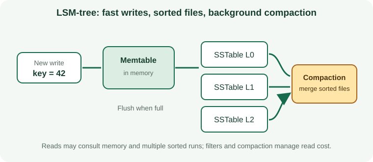

What Is a Primary-Key Indexing and Query Routing in Apache Cassandra?
Cassandra hashes the complete partition key to a token and maps it to replicas. Clustering columns organize rows inside one partition. This is the primary access path, not a separate CREATE INDEX object.
How the Primary-Key Indexing and Query Routing Algorithm Works
Cassandra hashes the complete partition key to a token and maps it to replicas. Clustering columns organize rows inside one partition. This is the primary access path, not a separate CREATE INDEX object.

When to Use Primary-Key Indexing and Query Routing
Known partition-key equality queries and bounded reads within a partition.
How to Create a Apache Cassandra Primary-Key Indexing and Query Routing
Review data quality, existing structures, feature support, build time, and deployment requirements before creating an index on a production table.
CREATE TABLE orders_by_customer (customer_id uuid, created_at timestamp, order_id uuid, status text, PRIMARY KEY (customer_id, created_at, order_id));Primary-Key Indexing and Query Routing Query Example
This example demonstrates the matching query shape. Check the execution plan to confirm that the engine can use the index.
SELECT order_id, status FROM orders_by_customer WHERE customer_id = ?;Queries Supported by Primary-Key Indexing and Query Routing
Known partition-key equality queries and bounded reads within a partition. A similar-looking predicate may not use the same access path; operators, expressions, key order, and data type all matter.
Read Performance, Storage, and Write Costs
Poor keys create hot spots or oversized partitions; unrouted reads can fan out across nodes. Indexes reduce some search work but require storage and add maintenance to writes.
Primary-Key Indexing and Query Routing Limitations and Common Mistakes
Cassandra primary-key indexing is not a relational per-row B-tree.
Do not assume that an index being present means the optimizer chose it or that the query became selective.
How to Measure and Tune Primary-Key Indexing and Query Routing
Model one table per important query; estimate partition size, rate, and token balance.
Compare representative plans and timings before and after, including concurrent writes and realistic data volumes.
Primary-Key Indexing and Query Routing Questions
Will the database always use this index?
No. The optimizer weighs selectivity, estimated costs, statistics, cache state, and the amount of data returned.
What should I verify before production?
Confirm version support, query compatibility, write overhead, build/rollback procedures, and index behavior during backup and recovery.
Official Apache Cassandra Index Documentation
Check Apache Cassandra documentation: Indexing concepts for release-specific requirements and supported operators.